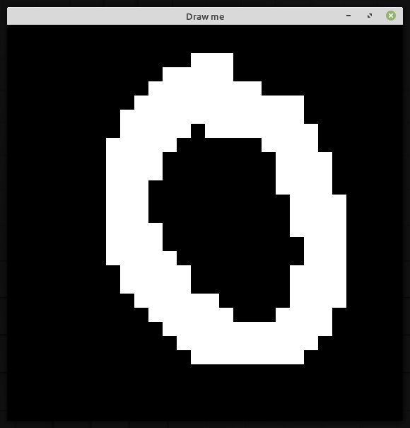
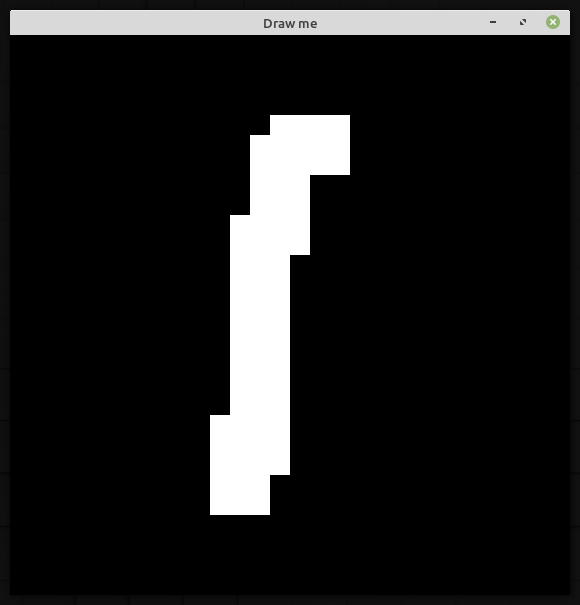
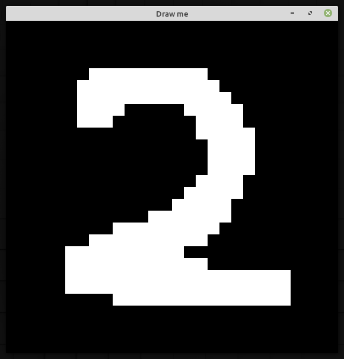
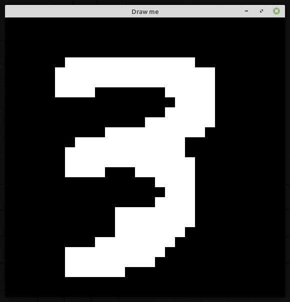
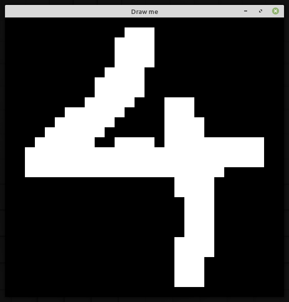
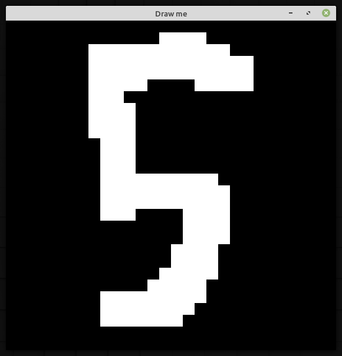
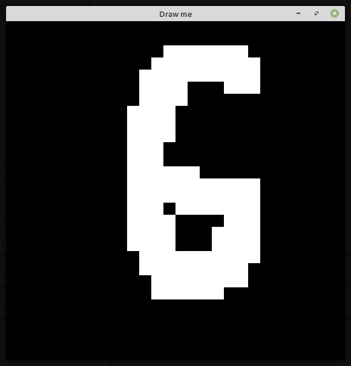
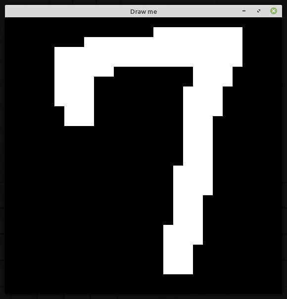
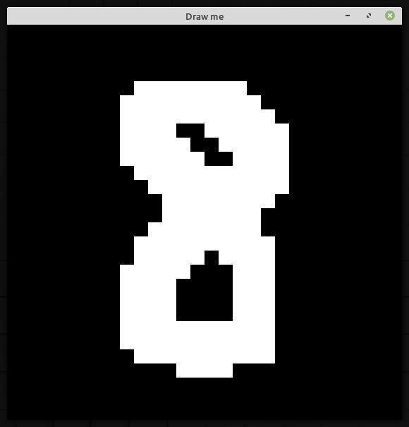
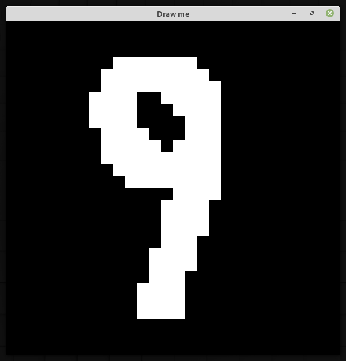

GEMM(GEneral Matrix Multiplication)アルゴリズムを使用した、Convolutional Neural Networkデモ
int training_data_size;
const int data_size = 60000;
const int test_data_size = 10000;
// 外部ライブラリーを使用して、MNISTデータセットを読み込み。
auto dataset = mnist::read_dataset<std::vector, std::vector, uint8_t, uint8_t>("../mnist");
// データセットの型を定義。
std::vector<Eigen::MatrixXf> data;
std::vector<Eigen::MatrixXf> labels;
std::vector<Eigen::MatrixXf> training_data;
std::vector<Eigen::MatrixXf> training_labels;
std::vector<Eigen::MatrixXf> validation_data;
std::vector<Eigen::MatrixXf> validation_labels;
std::vector<Eigen::MatrixXf> test_data;
std::vector<Eigen::MatrixXf> test_labels;
PreprocessTrainingData(dataset,data,labels,data_size); // data,labelsにトレーニングデータを格納
PreprocessTestData(dataset,test_data,test_labels,test_data_size); // test_data,test_labelsにテストデータを格納
// dataをtraining_dataとvalidation_dataに,それぞれ全体の90%,10%の割合で分割。labelsも同様。
training_data_size = SplitDataset(data,labels,training_data,training_labels,validation_data,validation_labels,0.9);
// インプットサイズ{28,28,1}(={height,width,depth})
// OptimizerとしてAdamWを使用(minibatchサイズ32,learning rateを1e-4,weight decayパラメータを1e-1,Loss関数としてCategoricalCrossEntropyを使用)
Network network({28,28,1},new optimizers::AdamW(training_data_size,32,1e-4,1e-1),Losses::CategoricalCrossEntropy);
// アーキテクチャを定義
network.addConv({5,5,6},{1,1},{2,2},Activations::LeakyRelu);
network.addPooling({2,2},{2,2});
network.addConv({5,5,16},{1,1},{0,0},Activations::LeakyRelu);
network.addPooling({2,2},{2,2});
network.addDense(120,Activations::LeakyRelu);
network.addDense(84,Activations::LeakyRelu);
network.addDense(10);
TrainNetwork(network,training_data,training_labels,validation_data,validation_labels,30); // 学習(epoch=30)
MeasureTestAccuracy(network,test_data,test_labels); // テストデータを使用して精度測定
$time ./mnist_demo
データセットを以下の割合で分割しました:
(Training dataset size:54000,Validation dataset size:6000)
[Epoch:1]
Progress:100.000000
Training Accuracy:95.2185%
Training loss:0.159512
Validation Accuracy:95.1833%
Validation loss:0.16031
[Epoch:2]
Progress:100.000000
Training Accuracy:96.3944%
Training loss:0.118527
Validation Accuracy:96.1167%
Validation loss:0.124891
[Epoch:3]
Progress:100.000000
Training Accuracy:96.9963%
Training loss:0.0967849
Validation Accuracy:96.7333%
Validation loss:0.106975
[Epoch:4]
Progress:100.000000
Training Accuracy:97.4907%
Training loss:0.0802523
Validation Accuracy:97.1833%
Validation loss:0.0930062
[Epoch:5]
Progress:100.000000
Training Accuracy:97.8018%
Training loss:0.0704676
Validation Accuracy:97.3667%
Validation loss:0.0851653
[Epoch:6]
Progress:100.000000
Training Accuracy:98.0796%
Training loss:0.0617308
Validation Accuracy:97.4833%
Validation loss:0.077688
[Epoch:7]
Progress:100.000000
Training Accuracy:98.2778%
Training loss:0.0550412
Validation Accuracy:97.7%
Validation loss:0.072566
[Epoch:8]
Progress:100.000000
Training Accuracy:98.4685%
Training loss:0.0501393
Validation Accuracy:97.8167%
Validation loss:0.0688145
[Epoch:9]
Progress:100.000000
Training Accuracy:98.5889%
Training loss:0.0465129
Validation Accuracy:97.9%
Validation loss:0.0660232
[Epoch:10]
Progress:100.000000
Training Accuracy:98.7%
Training loss:0.0434001
Validation Accuracy:97.9667%
Validation loss:0.0640782
[Epoch:11]
Progress:100.000000
Training Accuracy:98.8%
Training loss:0.0399863
Validation Accuracy:97.9833%
Validation loss:0.0613052
[Epoch:12]
Progress:100.000000
Training Accuracy:98.8463%
Training loss:0.0379964
Validation Accuracy:98%
Validation loss:0.0600557
[Epoch:13]
Progress:100.000000
Training Accuracy:98.9111%
Training loss:0.0362731
Validation Accuracy:98.0333%
Validation loss:0.0588014
[Epoch:14]
Progress:100.000000
Training Accuracy:98.9759%
Training loss:0.0344098
Validation Accuracy:98.1333%
Validation loss:0.056812
[Epoch:15]
Progress:100.000000
Training Accuracy:99.0074%
Training loss:0.0327494
Validation Accuracy:98.1333%
Validation loss:0.0554845
[Epoch:16]
Progress:100.000000
Training Accuracy:99.0037%
Training loss:0.0324463
Validation Accuracy:98.0667%
Validation loss:0.0555122
[Epoch:17]
Progress:100.000000
Training Accuracy:99.0778%
Training loss:0.0300339
Validation Accuracy:98.1833%
Validation loss:0.0529956
[Epoch:18]
Progress:100.000000
Training Accuracy:99.1444%
Training loss:0.028499
Validation Accuracy:98.2667%
Validation loss:0.0516001
[Epoch:19]
Progress:100.000000
Training Accuracy:99.2204%
Training loss:0.0269556
Validation Accuracy:98.4%
Validation loss:0.0499968
[Epoch:20]
Progress:100.000000
Training Accuracy:99.2407%
Training loss:0.025688
Validation Accuracy:98.3667%
Validation loss:0.049199
[Epoch:21]
Progress:100.000000
Training Accuracy:99.2648%
Training loss:0.024847
Validation Accuracy:98.3833%
Validation loss:0.0485632
[Epoch:22]
Progress:100.000000
Training Accuracy:99.2852%
Training loss:0.023887
Validation Accuracy:98.3833%
Validation loss:0.0475317
[Epoch:23]
Progress:100.000000
Training Accuracy:99.2648%
Training loss:0.02397
Validation Accuracy:98.3667%
Validation loss:0.0481386
[Epoch:24]
Progress:100.000000
Training Accuracy:99.3056%
Training loss:0.0230172
Validation Accuracy:98.45%
Validation loss:0.0470355
[Epoch:25]
Progress:100.000000
Training Accuracy:99.3241%
Training loss:0.0224096
Validation Accuracy:98.4833%
Validation loss:0.0462296
[Epoch:26]
Progress:100.000000
Training Accuracy:99.3519%
Training loss:0.0216083
Validation Accuracy:98.45%
Validation loss:0.0456416
[Epoch:27]
Progress:100.000000
Training Accuracy:99.3759%
Training loss:0.020905
Validation Accuracy:98.45%
Validation loss:0.0453327
[Epoch:28]
Progress:100.000000
Training Accuracy:99.413%
Training loss:0.0204832
Validation Accuracy:98.5333%
Validation loss:0.0452346
[Epoch:29]
Progress:100.000000
Training Accuracy:99.4093%
Training loss:0.0193997
Validation Accuracy:98.5667%
Validation loss:0.0440784
[Epoch:30]
Progress:100.000000
Training Accuracy:99.4278%
Training loss:0.0189825
Validation Accuracy:98.6%
Validation loss:0.0439568
Test Accuracy:98.48%
Test loss:0.0461103
real 95m32.284s
user 276m13.708s
sys 4m43.897s
         
$ ./mnist_drawing
使用したいモデルが保存されているファイルのパスを入力してください(例 ../models/adamw_lenet5.json):../models/adamw_lenet5.json
モデルを../models/adamw_lenet5.jsonから読み込みました。
[使用方法]
マウスボタンを押して,数字(0から9)を描写したあと,スペースキーを押下して数字を判定
判定結果:0(確率: 99.727%)
判定結果:1(確率: 99.934%)
判定結果:2(確率: 99.979%)
判定結果:3(確率:100.000%)
判定結果:4(確率: 99.989%)
判定結果:5(確率:100.000%)
判定結果:6(確率: 99.887%)
判定結果:7(確率: 99.712%)
判定結果:8(確率: 99.590%)
判定結果:9(確率: 84.114%)
> cd ./tests
> mkdir build && cd build
> cmake ..
> make
> ./gtest_main
> cd ./examples
> mkdir build && cd build
> cmake ..
> make
> ./mnist_demo
> cd ./examples
> mkdir build && cd build
> cmake ..
> make
> ./mnist_test
> cd ./examples
> mkdir build && cd build
> cmake ..
> make
> ./cifar10_test